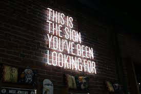

- ABOUT
- MY WORK
- CONTACT
I SAW THE SIGN
“and it opened up my eyes. One of my favorite things to do is to capture the american nostalgia of signage. They tell us where we’re going or where we’ve been. They express mood or saying you can even use a shape. BUT it’s the vintage, neon, and big light bulbed signs that say so much more. They aren’t just your average square shapes with letters on it. Some actual thought and planning went into the making of the sign (Oh and that lost era of advertising with neon signs that display motion is always a fun find! Such a lost art in my opinion. LED just hurts my eyes…doesn’t it?)”
